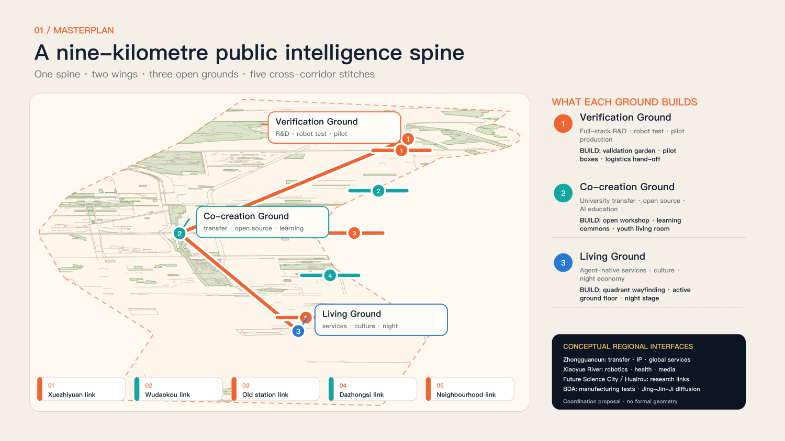
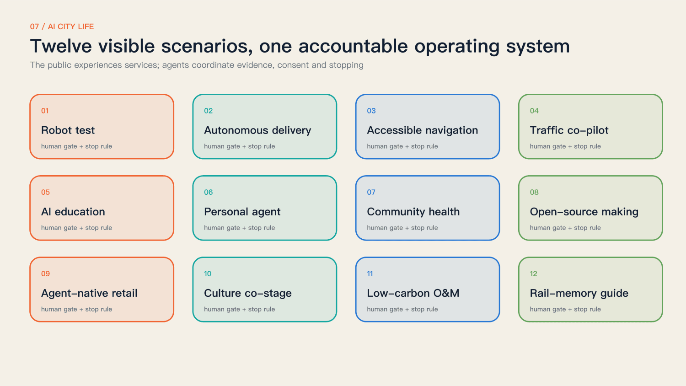
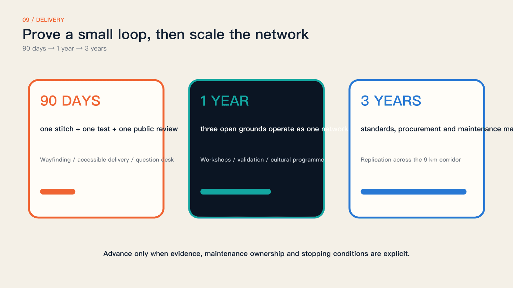

AI-ASSISTED CONCEPTNOT EXISTING · NOT APPROVEDAI辅助概念效果 · 非现状 · 未获实施批准
AI-ASSISTED CONCEPTNOT EXISTING · NOT APPROVEDAI辅助概念效果 · 非现状 · 未获实施批准Verify / Zhongzhiyuan
Plan, structure, section, scene and phased delivery are provided in the A3 booklet.
 AI-ASSISTED CONCEPTNOT EXISTING · NOT APPROVEDAI辅助概念效果 · 非现状 · 未获实施批准
AI-ASSISTED CONCEPTNOT EXISTING · NOT APPROVEDAI辅助概念效果 · 非现状 · 未获实施批准Turn a century-old railway into a nine-kilometre AI city prototyping ground.

AI-ASSISTED CONCEPTNOT EXISTING · NOT APPROVEDAI辅助概念效果 · 非现状 · 未获实施批准Plan, structure, section, scene and phased delivery are provided in the A3 booklet.
 AI-ASSISTED CONCEPTNOT EXISTING · NOT APPROVEDAI辅助概念效果 · 非现状 · 未获实施批准
AI-ASSISTED CONCEPTNOT EXISTING · NOT APPROVEDAI辅助概念效果 · 非现状 · 未获实施批准Plan, structure, section, scene and phased delivery are provided in the A3 booklet.
 AI-ASSISTED CONCEPTNOT EXISTING · NOT APPROVEDAI辅助概念效果 · 非现状 · 未获实施批准
AI-ASSISTED CONCEPTNOT EXISTING · NOT APPROVEDAI辅助概念效果 · 非现状 · 未获实施批准Plan, structure, section, scene and phased delivery are provided in the A3 booklet.


Masterplan, three design scales and key areas
Land use, mobility and blue-green commons
Buildings, renewal projects and AI scenarios
Core metrics and persisted self-check
Sources and assumptions are declared in the package.